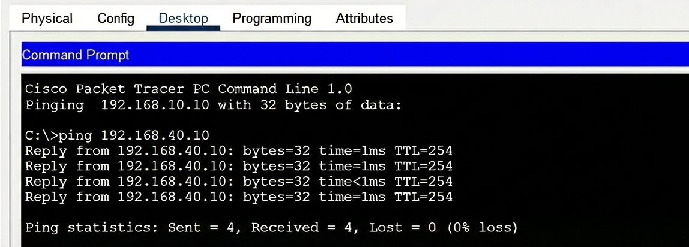
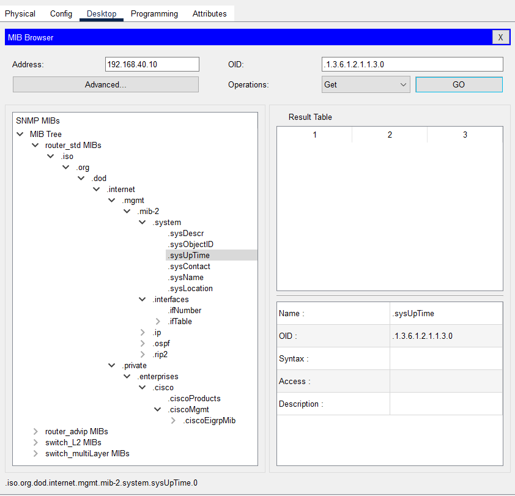

Pruebas y Monitorización
Una vez que esté todo configurado, el siguiente paso será hacer pruebas para comprobar que la red funciona correctamente y que las ACLs bloqueaban lo que tenían que bloquear.
Pruebas de Conectividad con Ping
El comando más útil para probar redes es ping. Se usará desde los diferentes dispositivos para ver si pueden comunicarse.
Pruebas Exitosas ✅
Primero comprobaremos que es lo que SÍ debería funcionar:
Desde PC0 (192.168.10.10) hice ping a PC1 (192.168.10.11):
C:\> ping 192.168.10.11
Reply from 192.168.10.11: bytes=32 time<1ms TTL=128
Reply from 192.168.10.11: bytes=32 time<1ms TTL=128
Reply from 192.168.10.11: bytes=32 time<1ms TTL=128
Reply from 192.168.10.11: bytes=32 time<1ms TTL=128
Ping statistics: Sent = 4, Received = 4, Lost = 0 (0% loss)
Funciona perfecto - Los PCs de la misma VLAN se comunican sin problemas.

Desde PC0 (192.168.10.10) hice ping a Impresora0 (192.168.20.10):
C:\> ping 192.168.20.10
Reply from 192.168.20.10: bytes=32 time=1ms TTL=127
Reply from 192.168.20.10: bytes=32 time<1ms TTL=127
Reply from 192.168.20.10: bytes=32 time<1ms TTL=127
Reply from 192.168.20.10: bytes=32 time=1ms TTL=127
Ping statistics: Sent = 4, Received = 4, Lost = 0 (0% loss)
Funciona - El enrutamiento entre VLANs está bien configurado. El TTL=127 indica que pasó por el switch (1 salto).

Desde PC0 (192.168.10.10) hice ping al Router (192.168.40.10):
C:\> ping 192.168.40.10
Reply from 192.168.40.10: bytes=32 time=1ms TTL=254
Reply from 192.168.40.10: bytes=32 time=1ms TTL=254
Reply from 192.168.40.10: bytes=32 time<1ms TTL=254
Reply from 192.168.40.10: bytes=32 time=1ms TTL=254
Ping statistics: Sent = 4, Received = 4, Lost = 0 (0% loss)
Funciona - Todos pueden acceder al router.

Pruebas con ACL (Bloqueadas)
Ahora viene lo importante: comprobar que las ACLs SÍ están bloqueando lo que no debería pasar.
Desde Laptop0 (192.168.30.10) intenté hacer ping a PC0 (192.168.10.10):
C:\> ping 192.168.10.10
Request timed out.
Request timed out.
Request timed out.
Request timed out.
Ping statistics: Sent = 4, Received = 0, Lost = 4 (100% loss)
BLOQUEADO - ¡Perfecto! La ACL está funcionando. El portátil WiFi NO puede acceder a los PCs.
Desde Laptop0 (192.168.30.10) intenté hacer ping a Impresora0 (192.168.20.10):
C:\> ping 192.168.20.10
Request timed out.
Request timed out.
Request timed out.
Request timed out.
Ping statistics: Sent = 4, Received = 0, Lost = 4 (100% loss)
BLOQUEADO - También funciona. El WiFi no puede acceder a las impresoras.
Desde Laptop0 (192.168.30.10) hice ping al Router (192.168.40.10):
C:\> ping 192.168.40.10
Reply from 192.168.40.10: bytes=32 time=2ms TTL=254
Reply from 192.168.40.10: bytes=32 time=1ms TTL=254
Reply from 192.168.40.10: bytes=32 time=1ms TTL=254
Reply from 192.168.40.10: bytes=32 time=2ms TTL=254
Ping statistics: Sent = 4, Received = 4, Lost = 0 (0% loss)
Funciona - El WiFi SÍ puede acceder al router (y por tanto a internet). Esto es lo que quería.
Tabla Resumen de Pruebas
| Origen | Destino | IP Destino | Resultado | Motivo |
|---|---|---|---|---|
| PC0 | PC1 | 192.168.10.11 | ✅ Funciona | Misma VLAN |
| PC0 | Impresora0 | 192.168.20.10 | ✅ Funciona | Enrutamiento Inter-VLAN |
| PC0 | Router | 192.168.40.10 | ✅ Funciona | Sin restricciones |
| Laptop0 | PC0 | 192.168.10.10 | ❌ Bloqueado | ACL 100 deny |
| Laptop0 | Impresora0 | 192.168.20.10 | ❌ Bloqueado | ACL 100 deny |
| Laptop0 | Router | 192.168.40.10 | ✅ Funciona | ACL permite |
¡Todo funciona como esperaba!
Las ACLs están haciendo su trabajo correctamente. Los portátiles WiFi no pueden acceder a recursos internos, pero sí al router.
Pruebas Bidireccionales
También hay que comprobar que los PCs SÍ pueden hacer ping a los portátiles. La ACL solo bloquea en una dirección (desde VLAN 30 hacia fuera):
Desde PC0 (192.168.10.10) a Laptop0 (192.168.30.10):
C:\> ping 192.168.30.10
Reply from 192.168.30.10: bytes=32 time=2ms TTL=127
Reply from 192.168.30.10: bytes=32 time=1ms TTL=127
Reply from 192.168.30.10: bytes=32 time=2ms TTL=127
Reply from 192.168.30.10: bytes=32 time=1ms TTL=127
Ping statistics: Sent = 4, Received = 4, Lost = 0 (0% loss)
Funciona. Esto es útil porque los administradores (desde los PCs) sí pueden gestionar los dispositivos WiFi si hace falta.
Monitorización con SNMP
Para poder supervisar el estado de la red, se deberá configurar SNMP en el router. SNMP permite ver información como:
- Tiempo que lleva encendido el router
- Nombre del dispositivo
- Configuración actual
- Estados de las interfaces
Configuración de SNMP en el Router
RouterPrincipal> enable
RouterPrincipal# configure terminal
! Configurar información de contacto
RouterPrincipal(config)# snmp-server contact Nerea Fernandez
RouterPrincipal(config)# snmp-server location Sala Servidores
! Configurar "community strings" (como passwords)
RouterPrincipal(config)# snmp-server community read RO
RouterPrincipal(config)# snmp-server community write RW
! Activar el servidor SNMP
RouterPrincipal(config)# snmp-server enable traps
RouterPrincipal(config)# exit
RouterPrincipal# write memory
Community Strings
- read (RO) = Read Only (solo lectura) - Para consultar información
- write (RW) = Read-Write (lectura y escritura) - Para hacer cambios remotos
Probando SNMP desde un PC
Para probar SNMP, desde PC0 (192.168.10.10) abrí el MIB Browser (en Desktop):
- Fui a Advanced
- Configuré:
- IP: 192.168.40.10 (el router)
- Puerto: 161 (puerto por defecto de SNMP)
- Read Community: read
-
Write Community: write
-
En SNMP MIBs → system → sysName
- Me salió el OID del router (identificación única)
- También pude ver el tiempo de encendido (uptime)

¿Qué información puedes ver con SNMP?
Con el MIB Browser pude consultar:
| Información | OID | Descripción |
|---|---|---|
| sysName | 1.3.6.1.2.1.1.5.0 | Nombre del router |
| sysUpTime | 1.3.6.1.2.1.1.3.0 | Tiempo encendido |
| sysContact | 1.3.6.1.2.1.1.4.0 | Contacto (Nerea Fernandez) |
| sysLocation | 1.3.6.1.2.1.1.6.0 | Ubicación (Sala Servidores) |
Para qué sirve SNMP
En una red real, podrías usar un software de monitorización (como Zabbix o PRTG) que consulta SNMP automáticamente y te avisa si algo va mal (por ejemplo, si el router se apaga).
Verificación de Spanning Tree
Para comprobar que STP está funcionando:
SwitchCapa3# show spanning-tree brief
VLAN0010
Spanning tree enabled protocol ieee
Root ID Priority 24576
This bridge is the root
VLAN0020
Spanning tree enabled protocol ieee
Root ID Priority 24576
This bridge is the root
...
Como dice "This bridge is the root", significa que el switch es la raíz de todas las VLANs, tal como se configuró.
Verificación de Port-Security
Para ver si port-security está activo:
SwitchCapa3# show port-security
Secure Port MaxSecureAddr CurrentAddr SecurityViolation Security Action
-----------------------------------------------------------------------------
Fa0/1 1 1 0 Shutdown
...
Esto me dice:
- Puerto Fa0/1 está asegurado
- Máximo 1 dispositivo permitido
- Actualmente hay 1 conectado
- No ha habido violaciones de seguridad
Comandos Útiles para Verificación
Estos son los comandos que más usé para comprobar que todo estaba bien:
! Ver las VLANs y sus puertos
show vlan brief
! Ver las IPs de las interfaces VLAN
show ip interface brief
! Ver la tabla de rutas
show ip route
! Ver las ACLs configuradas
show access-lists
! Ver tabla MAC show mac address-table
! Ver estado de STP
show spanning-tree
! Ver port-security
show port-security interface fa0/1
Todas las pruebas pasadas
Después de todas estas pruebas, puedo confirmar que:
- La red funciona correctamente
- Las VLANs están bien configuradas
- El enrutamiento Inter-VLAN funciona
- Las ACLs bloquean lo que tienen que bloquear
- SNMP está operativo
- STP está activo
- Port-security está configurada
Siguiente: Conclusiones →